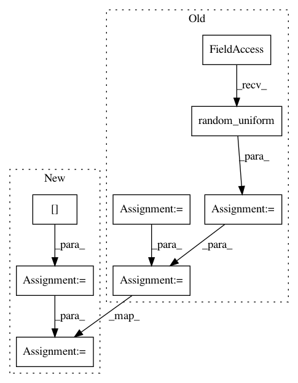

69fbcfdde79e5a857b6c4ba7032fe2cd120c6b65,tests/test_hypersphere.py,TestHypersphere,test_geodesic_and_belongs,#TestHypersphere#,459
Before Change
def test_geodesic_and_belongs(self):
n_geodesic_points = 10
initial_point = self.space.random_uniform()
vector = gs.array([2., 0., -1., -2., 1.])
initial_tangent_vec = self.space.to_tangent(
vector=vector, base_point=initial_point)
geodesic = self.metric.geodesic(
initial_point=initial_point,
initial_tangent_vec=initial_tangent_vec)
t = gs.linspace(start=0., stop=1., num=n_geodesic_points)
points = geodesic(t)
result = self.space.belongs(points)
After Change
result = gs.stack([self.space.belongs(pt) for pt in points])
self.assertTrue(gs.all(result))
initial_point = initial_point[0]
initial_tangent_vec = initial_tangent_vec[0]
geodesic = self.metric.geodesic(
initial_point=initial_point,
initial_tangent_vec=initial_tangent_vec)
points = geodesic(t)
result = self.space.belongs(points)
expected = gs.array(n_geodesic_points * [True])
self.assertAllClose(expected, result)
In pattern: SUPERPATTERN
Frequency: 3
Non-data size: 8
Instances
Project Name: geomstats/geomstats
Commit Name: 69fbcfdde79e5a857b6c4ba7032fe2cd120c6b65
Time: 2020-05-08
Author: nicolas.guigui@inria.fr
File Name: tests/test_hypersphere.py
Class Name: TestHypersphere
Method Name: test_geodesic_and_belongs
Project Name: geomstats/geomstats
Commit Name: 3ef34a25874548e97d9a6e0aeeb2f4e71fb6c1fa
Time: 2018-02-23
Author: ninamio78@gmail.com
File Name: tests/test_special_euclidean_group.py
Class Name: TestSpecialEuclideanGroupMethods
Method Name: test_exp_vectorization
Project Name: geomstats/geomstats
Commit Name: 3ef34a25874548e97d9a6e0aeeb2f4e71fb6c1fa
Time: 2018-02-23
Author: ninamio78@gmail.com
File Name: tests/test_special_euclidean_group.py
Class Name: TestSpecialEuclideanGroupMethods
Method Name: test_log_vectorization